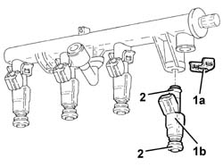

1056B70 injector (one) - r + r with fuel manifold pipe removed - includes seal replacemnt
- Path
- Procedures > 10 ENGINE > 1056 PETROL INJECTION SYSTEM > 1056B multi-point injection system (mpi) > 1056B70 injector (one) - r + r with fuel manifold pipe removed - includes seal replacemnt
- Kind
- repair procedure (removal / refitting; the operation number is the code)
- Applies to
- engines: 1.6 TS, 2.0 TS, 3.2 V6; all production periods
- Interactive page
- https://sloeber94.github.io/elrnDB-a147/en/#/3024838
Applies to: engines: 1.6 TS; all production periods
 Removing
Removing
 Refitting
Refitting1. Remove the clips (1a) and remove the injectors (1b) from the single fuel manifold pipe.
2. Remove the seals from the injector

Applies to: engines: 1.6 TS; all production periods
Refitting
RemovingFit new seals to the injector
Refit the injector into its seat on the single fuel manifold pipe and secure with a clip.
Applies to: engines: 2.0 TS; all production periods
Removing
Refitting1. Remove clip (1a) and remove injector (1b) from the single fuel manifold pipe.
2. Remove the injector seals
Applies to: engines: 2.0 TS; all production periods
Refitting
RemovingFit new gaskets to the injector.
Refi the injector in its seat on the single fuel manifold pipe and secure with a clip.
Applies to: engines: 3.2 V6; all production periods
1056B68 set of injectors - r + r with fuel manifold pipe removed - includes seal replacement bearing in mind that you are working on one injector only.